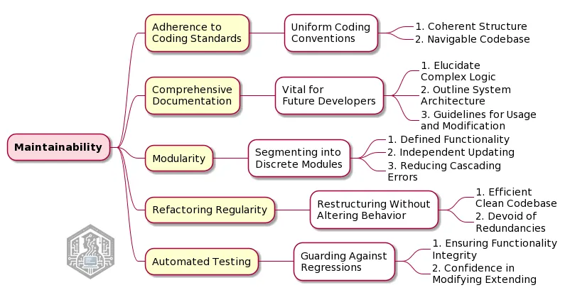

- Durability in Coding: The Software Engineer’s Playbook
- Understanding the Core of Long-Lasting Software Design Through Maintainability
- Adherence to Coding Standards
- Comprehensive Documentation
- Modularity
- Refactoring Regularity
- Automated Testing
Durability in Coding: The Software Engineer’s Playbook¶
Understanding the Core of Long-Lasting Software Design Through Maintainability¶

This map delineates key practices for software maintainability, such as adherence to coding standards, comprehensive documentation, modularity, regular refactoring, and automated testing.
[…] In software engineering, maintainability grants that software remains adaptable, functional, and relevant over time, which means crafting software in a way that facilitates future modifications, enhancements, and bug fixes with minimal effort and complexity. This notion of maintainability hinges on several fundamental practices.
- Adherence to Coding Standards: Uniform coding conventions are the bedrock of maintainable software; they foster a coherent structure, making the codebase intelligible and navigable for different engineers, which is particularly important in collaborative environments or when transferring projects between teams.
- Comprehensive Documentation: Often undervalued yet vital, thorough documentation acts as a roadmap for future developers; it should elucidate complex logic, outline system architecture, and provide clear guidelines for using and modifying the code.
- Modularity: Segmenting software into discrete, cohesive modules is akin to building with well-designed puzzle pieces, where each module, with its defined functionality, can be updated, replaced, or debugged independently, enhancing flexibility, and reducing the risk of cascading errors in the system.
- Refactoring Regularity: Regular refactoring — the art of restructuring existing code without altering its external behavior — is akin to pruning a garden for optimal growth. It helps in keeping the codebase efficient, clean, and devoid of redundancies, thereby easing future modifications.
- Automated Testing: A robust suite of automated tests serves as a sentinel, guarding against regressions and ensuring that latest changes do not inadvertently dismantle existing functionalities; it is a safety net that provides the confidence to modify and extend a system.
In the grand scheme of software lifecycle, maintainability is not merely an option but a necessity, and it is the foresight in design and development that ensures software longevity and resilience in the face of evolving technology landscapes and business requirements, and also it is the subtle art and precise science of crafting software that stands the test of time.
Adherence to Coding Standards¶
Coding standards provide a set of rules or guidelines on how to write code, and these might include how to name variables so that they clearly indicate what they store, how to structure loops and functions, or even how to comment on the code.
In short, the code becomes more orderly and less chaotic.
It’s like keeping your workspace tidy — it not only looks good but also makes it easier to find things and work efficiently.
Moreover, when everyone adheres to the same standards, it’s like speaking the same language. There’s less confusion and fewer misunderstandings, and it becomes easier to spot errors because they stand out in the otherwise uniform code.
This uniformity also speeds up the process of fixing bugs and adding new features, and instead of trying to decipher someone else’s unique style of coding, you can focus on the actual problem or the new functionality.
Comprehensive Documentation¶
Good documentation acts as a map for the software, because it provides a clear overview of the system’s architecture, showing how different parts of the software interact with each other.
This is especially useful for new team members who need to get up to speed quickly, so they can easily dive into the documentation and get a broad understanding of the system without having to ask others for help constantly.
This strategic documentation approach includes details about how to use various functions and components in the software, describing what each part does, why it’s there, and how it should be used, and it reducing the risk of inadvertently affecting other parts of the software making changes or adding new features.
Remember also that a good documentation explains the logic behind complex pieces of code, and sometimes, we have to write intricate code to solve difficult problems. Without an explanation, this code can look like a puzzle, really! Documentation gives you the reasoning behind these decisions, making it easier for others to understand and maintain the code in the future.
Modularity¶
Modularity in software engineering refers to the practice of dividing a software system into distinct, independent units, known as modules, where each module is designed to execute a unique part of the software’s functionality. This way, we can isolate specific areas of the software for development or troubleshooting, making the overall process more manageable.
The key feature here is that each module encapsulates a specific function or a set of related functions, having then individual modules to be developed, tested, and debugged independently of one another.
As a result, we can focus on smaller sections of the software at a time, which simplifies both the development and maintenance processes.
Also, another significant benefit of modularity is the ease of making changes or updates, where modifications can be made to a single module without the need to alter the entire software system.
This isolation of changes reduces the likelihood of inadvertently introducing errors into unrelated parts of the software.
Refactoring Regularity¶
This practice in software engineering concerns the periodic updating and restructuring of existing code to improve its efficiency and readability without changing its external behavior.
We’re here talking about continually reviewing and improving the codebase, a process that entails simplifying complex code, removing redundancies, and improving code organization, with the goal to make the code more efficient, easier to understand, and easier to maintain.
Over time, as software is updated and new features are added, the code can become cluttered and complicated, we already know that. Refactoring helps definitely to streamline this code, making it easier for us to navigate and work with.
Don’t forget also the prevention of technical debt, which refers to the extra development work that arises when code that is easy to implement in the short run is used instead of applying the best overall solution.
Regular refactoring helps to reduce this debt by continuously improving the code, thereby avoiding the buildup of issues that can become costly to fix later on.
Automated Testing¶
The main advantage of automated testing is its efficiency. Once the tests are set up, they can be run repeatedly at any time, without the need for manual intervention, which saves a significant amount of time compared to manual testing, where each test has to be performed by a person.
Automated tests can also run faster than a human tester, allowing for more tests to be completed in a shorter period.
Automated testing improves the accuracy of the testing process, and since the tests are performed by software, they are not subject to human error.
They will perform the same actions in the same order every time they are run, ensuring consistent and reliable results, which is particularly important for finding and fixing bugs, as it helps to test thoroughly every part of the software.